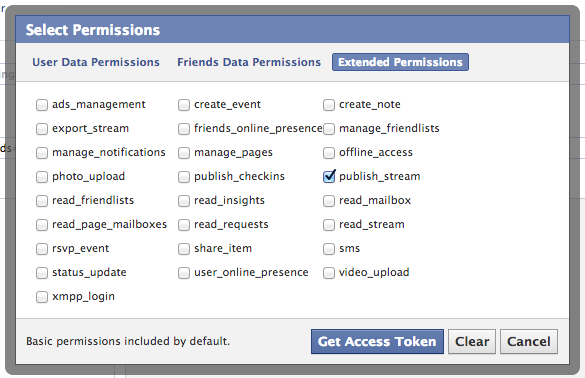
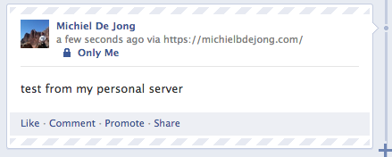

unhosted web apps
freedom from web 2.0's monopoly platforms
5. Facebook and Twitter from nodejs
No Cookie Crew - Warning #3: This tutorial still requires you to update your personal server using an ssh/scp client. Also, to register your personal server with the respective APIs, you need to log in to Twitter and Facebook, accepting their cookies onto your device one last time...
Connecting to Facebook
Connecting to Facebook is easier than you might think. First, of course you need a Facebook account, so register one if you don't have one yet. Then you need to visit the Graph API Explorer, and click 'Get Acces Token'. Log in as yourself, and click 'Get Access Token' a second time to get the dialog for requesting access scopes. In there, go to 'Extended Permissions', and select 'publish_stream'; it should look something like this:
The OAuth dance will ask you to grant Graph API Explorer access to your Facebook account, which obviously you have to allow for this to work.
Once you are back on the Graph API Explorer, you can play around to browse the different kinds of data you can now access. You can also read more about this in Facebook's Getting Started guide. For instance, if you do a POST to /me/feed while adding a field "message" (click "Add a field") with some string value, that will post the message to your timeline.
But the point here is
to copy the token from the explorer tool, and save it in a config file on your personal server. Once you have done that, you can use the
http.Request
class from nodejs to make http calls to Facebook's API. Here is an example script that updates your status in your Facebook timeline:
var https = require('https'),
config = require('./config').config;
function postToFacebook(str, cb) {
var req = https.request({
host: 'graph.facebook.com',
path: '/me/feed',
method: 'POST'
}, function(res) {
res.setEncoding('utf8');
res.on('data', function(chunk) {
console.log('got chunk '+chunk);
});
res.on('end', function() {
console.log('response end with status '+res.status);
});
});
req.end('message='+encodeURIComponent(str)
+'&access_token='+encodeURIComponent(config.facebookToken));
console.log('sent');
};
postToFacebook('test from my personal server');
The result will look something like this:

If in the menu of the Graph API Explorer you click "apps" on the top right (while logged in as yourself), then you can define your own client app. The advantage of this is that it looks slightly nicer in the timeline, because you can set the 'via' attribute to advertise your personal server's domain name, instead of the confusing and incorrect 'via Graph API Explorer':
Normally, you would see the name of an actual application there, for instance 'via Foursquare' or 'via Spotify'. But since we are taking the application out of the server and putting it into the browser, and the access token is guarded by your personal server, not by the unhosted web app you may use to edit the text and issue the actual posting command, it is correct here to say that this post was posted via your personal server.
This means that for everybody who federates their personal server with Facebook, there will effectively be one "Facebook client app", but each one will have only one user, because each user individually registers their own personal gateway server as such.
There is a second advantage of registering your own app: it gives you an appId and a clientSecret with which you can exchange the one-hour token for a 60-day token. To do that, you can call the following nodejs function once, giving your appId, clientSecret, and the short-lived token as arguments:
var https = require('https');
function longLiveMyToken(token, appId, clientSecret) {
var req = https.request({
host: 'graph.facebook.com',
path: '/oauth/access_token',
method: 'POST'
}, function(res) {
res.setEncoding('utf8');
res.on('data', function(chunk) {
console.log(chunk);
});
res.on('end', function() {
console.log('status: '+res.status);
});
});
req.end('grant_type=fb_exchange_token'
+'&client_id='+encodeURIComponent(appId)
+'&client_secret='+encodeURIComponent(clientSecret)
+'&fb_exchange_token='+encodeURIComponent(token)
);
};
Once you run this script on your server, you will see the long-lived token on the console output, so you can paste it from there into your config file. You can also use the Graph API Browser to "Debug" access tokens - that way you see their permissions scope and their time to live. As far as I know you will have to repeat this token exchanging process every 60 days, but maybe there is some way we could automate that. We will worry about that in two months from now. :)
Connecting to Twitter
And just because this is so easy in nodejs, here is the equivalent server-side script for twitter as well:
var twitter = require('ntwitter'),
config = require('./config').config;
var twit = new twitter({
consumer_key: config.twitterConsumerKey,
consumer_secret: config.twitterConsumerSecret,
access_token_key: config.twitterAccessToken,
, access_token_secret: config.twitterAccessTokenSecret
});
function postToTwitter(str, cb) {
twit.verifyCredentials(function (err, data) {
if (err) {
cb("Error verifying credentials: " + err);
} else {
twit.updateStatus(str, function (err, data) {
if (err) {
cb('Tweeting failed: ' + err);
} else {
cb('Success!')
}
});
}
});
}
postToTwitter('Sent from my personal server', function(result) {
console.log(result);
}
To obtain the config values for the twitter script, you need to log in to dev.twitter.com/apps and click 'Create a new application'. You can, again, put your own domain name as the app name, because it will be your server that effectively acts as the connecting app. Under 'Setting', set the Application Type to 'Read, Write and Access direct messages', and by default, for the twitter handle by which you registered the app, the app will have permission to act on your behalf.
At the time of writing, there is a bug in ntwitter which means that tweets with apostrophes or exclamation marks will fail. A patch is given there, so if you are really eager to tweet apostrophes then you could apply that, but I haven't tried this myself. I just take this into account until the bug is fixed, and rephrase my tweets so that they contain no apostrophes. :)
A WebSocket-based gateway
The next step is to connect this up to a WebSocket. We simply integrate our postToFacebook and postToTwitter functions into the pinger.js script that we created last week. One thing to keep in mind though, is that we don't want random people guessing the port of the WebSocket, and being able to freely post to your Facebook and Twitter identities. So the solution for that is that we give out a token to the unhosted web app from which you will be connecting, and then we make it send that token each time it wants to post something.
Upload this server-side script, making sure you have the right variables in a 'config.js' file in the same directory. You can run it using 'forever':
var sockjs = require('sockjs'),
fs = require('fs'),
https = require('https'),
twitter = require('ntwitter'),
config = require('./config').config,
twit = new twitter({
consumer_key: config.twitterConsumerKey,
consumer_secret: config.twitterConsumerSecret,
access_token_key: config.twitterAccessToken,
access_token_secret: config.twitterAccessTokenSecret
});
function postToTwitter(str, cb) {
twit.verifyCredentials(function (err, data) {
if (err) {
cb("Error verifying credentials: " + err);
} else {
twit.updateStatus(str, function (err, data) {
if (err) {
cb('Tweeting failed: ' + err);
} else {
cb('Success!')
}
});
}
});
}
function postToFacebook(str, cb) {
var req = https.request({
host: 'graph.facebook.com',
path: '/me/feed',
method: 'POST'
}, function(res) {
res.setEncoding('utf8');
var str = '';
res.on('data', function(chunk) {
str += chunk;
});
res.on('end', function() {
cb({
status: res.status,
text: str
});
});
});
req.end("message="+encodeURIComponent(str)
+'&access_token='+encodeURIComponent(config.facebookToken));
};
function handle(conn, chunk) {
var obj;
try {
obj = JSON.parse(chunk);
} catch(e) {
}
if(typeof(obj) == 'object' && obj.secret == config.secret
&& typeof(obj.object) == 'object') {
if(obj.world == 'twitter') {
postToTwitter(obj.object.text, function(result) {
conn.write(JSON.stringify(result));
});
} else if(obj.world == 'facebook') {
postToFacebook(obj.object.text, function(result) {
conn.write(JSON.stringify(result));
});
} else {
conn.write(chunk);
}
}
}
var httpsServer = https.createServer({
key: fs.readFileSync(config.tlsDir+'/tls.key'),
cert: fs.readFileSync(config.tlsDir+'/tls.cert'),
ca: fs.readFileSync(config.tlsDir+'/ca.pem')
}, function(req, res) {
res.writeHead(200);
res.end('connect a WebSocket please');
});
httpsServer.listen(config.port);
var sockServer = sockjs.createServer();
sockServer.on('connection', function(conn) {
conn.on('data', function(chunk) {
handle(conn, chunk);
});
});
sockServer.installHandlers(httpsServer, {
prefix:'/sock'
});
console.log('up');
And then you can use this simple unhosted web app as your new social dashboard.
Federated or just proxied?
So now you can stay in touch with your friends on Facebook and Twitter, without you yourself ever logging in to either of these walled gardens, the monopoly platforms of web 2.0.
Several people here at Hacker Beach have reacted to drafts of this post, saying that proxying your requests through a server does not change the fact that you are using these platforms. I understand this reaction, but I do not agree, for several reasons:
Separating applications from namespaces.
Many online services offer a hosted web app, combined with a data storage service. But apart from application hosting and data storage, many of them define a "namespace", a limited context that confines who and what you interact with, and a walled garden in which your data "lives".
For instance, the Facebook application will allow you to read about things that happen in the Facebook world, but not outside it. As an application, it is restricted to Facebook's "name space". This means this hosted application gives you a restricted view of the online universe; it is a software application that is specific to only one namespace. As an application, we can say that it is "namespace-locked", very similar to the way in which a mobile phone device can be "SIM-locked" to a specific SIM-card provider.
The way we circumvent this restriction is by interacting with the namespace of a service *without* using the namespace-locked application that the service offers. Namespace-locked applications limit our view of the world to what the application provider wants us to interact with.
So by communicating with the API of a service instead of with its web interface, we open up the possibility of using an "unlocked" application which we can develop ourselves, and improve and adapt however we want, without any restrictions imposed by any particular namespace provider. While using such a namespace-lock-free application, our view of the online world will be more universal and free, and less controlled and influenced by commercial interests.
Avoiding Cookie federation
Both Facebook and Google will attempt to platformize your web experience. Using your server as a proxy between your browser and these web2.0 platforms avoids having their cookies in your browser while you browse the rest of the web.
Your account in each world is only a marionet, you own your identity.
Since you use your own domain name and your own webserver as your main identity, the identities you appear as on the various closed platforms are no longer your main online identity; they are now a shadow, or hologram, of your main identity, which lives primarily on your Indie Web site.
Your data is only mirrored, you own the master copy.
Since all posts go through your server on the way out, you can easily relay posts outside the namespace you originally posted them to, and hold on to them as long as you want in your personal historical data log. You can also easily post the same content to several namespaces at the same time when this makes sense.
What if they retract your API key and kick your "app" off their platform?
That's equivalent to a mailserver blacklisting you as a sender; it is not a retraction of your right to send messages from your server, just (from our point of view) a malfunction of the receiving server.
Conclusion
The big advantage of using a personal server like this is that you are only sending data to each web 2.0 world when this is needed to interact with other people on there. You yourself are basically logged out of web 2.0, using only unhosted web apps, even though your friends still see your posts and actions through these "puppet" identities. They have no idea that they are effectively looking at a hologram when they interact with you.
We will come back to both Facebook and Twitter in later episodes to discuss other things like controlling more than one Twitter handle, receiving and responding to Facebook friend requests, and everything else. These basic examples mainly serve to show you how easy it is to build a personal server that federates seamlessly with the existing web 2.0 worlds.
Also, if you browse through the API documentation of both Twitter and Facebook, you will see all kinds of things you can control through there. So you can go ahead yourself and add all those functions to your gateway (just make sure you always check if the correct secret is being sent on the WebSocket), and then build out this social dashboard app to do many more things.
You may or may not be aware that most other web2.0 websites actually have very similar REST APIs, and when the API is a bit more complicated, there is probably a nodejs module available that wraps it up, like in the case of Twitter here. So it should be possible this way to, for instance, create an unhosted web app that posts github issues, using your personal server of a gateway to the relevant APIs.
Have fun! I moved this episode forward in the series from where it was originally, so that you can have a better feeling of where we are going with all this, even though you still have to do all of this through ssh. Next week we will solve that though, as we add what you could call a "webshell" interface to the personal server. That way, you can use an unhosted web app to upload, modify, and run nodejs scripts on your server, as well as doing any other server maintenance which you may now be doing via ssh. This will be another important step forward for the No Cookie Crew. See you next week: same time, same place!